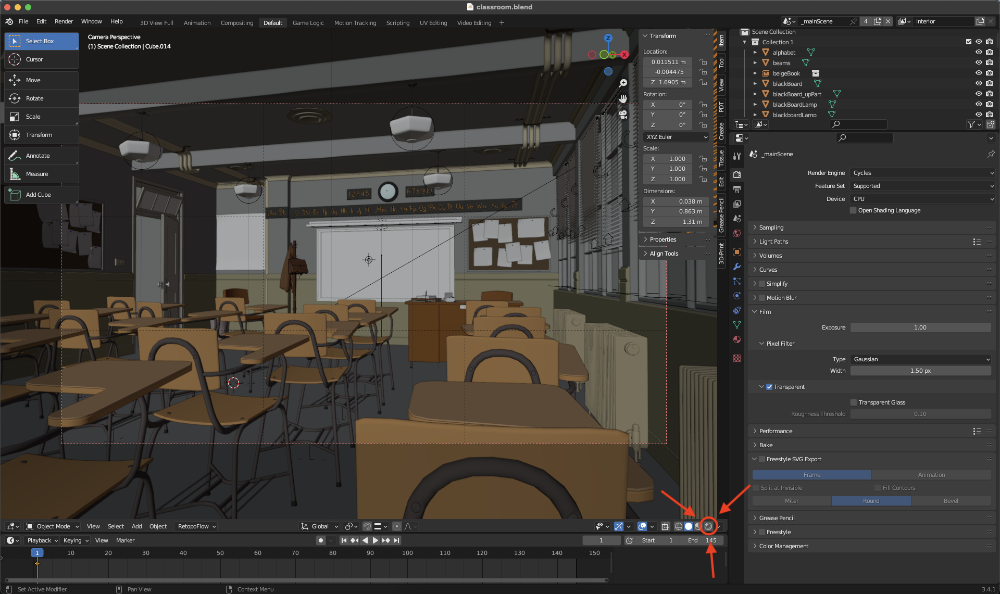
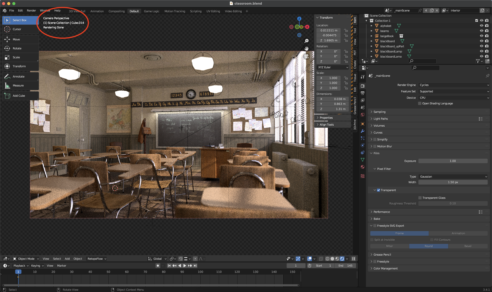

Install & Test
A) Overview
Downloading and installing Blender is normally a straightforward process. However, if you have never tested the software on your particular computer hardware it is best to download, install and open a demo file for quick testing. Furthermore, I would like to ensure we are all using a similar installation with default settings and layout.
B) Recommended Blender version
Blender is under constant development meaning there are small incremental releases happening weekly. Implementing small changes on a constant basis can cause instability or bugs to the end user. I recommend downloading a Long Term Release version as these versions are intended for studios that favor reliability over new features. The latest (LTS) release version is version 3.3.3
Direct Link to 3.3 LTS release download
C) Running a demo file
Once you have Blender installed, it is best to open a demo scene to check for crashing or other bugs. There is a page hosted by the organization that allows anyone to download open sourced demo scenes.
1. Download demo scene
This course will not be taxing on your system as we are using basic features. I recommend downloading the 'Classroom Scene' created by Christophe Seux. Here is a direct link to downloading the file.
2. Open demo scene
Once you have downloaded the demo file, unzip it and open the classroom.blend file. Upon first opening the file you should see this:
3. Enable 'Viewport Shading'
In order to test the capability of your computer for rendering click this button circled in red:

Once you have clicked the 'Viewport shading button' as indicated by the red circle, patiently wait for the scene to load. The time to load varies depending on what computer you are using. I would suggest leaving this process for 1-10 mins.
4. Confirm the demo scene has rendered correctly
The scene should render within that suggested timeframe and look like this. Note: there is text in the upper left corner that indicates the loading, rendering and completion of the scene as indicated here.

If your scene looks like this screenshot then you have successfully stress tested your machine and are ready to take on this course. By completing this stress test we can now deduce that:
- Your Blender 3.3.3 installation was successful.
- You have opened your first Blender file.
- Your machine is capable of rendering [Raytraced.](https://en.wikipedia.org/wiki/Ray_tracing_(graphics)"Wikipedia Page for Raytracing Graphics") light successfully.
- You are ready to begin the course!